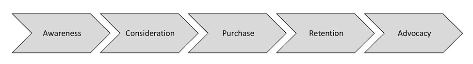

Chapter 4
On my first product team, I read some support tickets and talked to a few customers on the phone. Mostly, however, I made decisions without ever talking to a real customer. Instead, I studied our product's personas, a small set of fictional people designed to represent the different types of customers. This was considered a best practice in 2004, but basically I was just guessing what customers would want.
Later, I saw how small errors in my assumptions became large problems for customers.
In one case, I'd saved engineering time by squeezing in a feature in a way that didn't pick up custom colors. I'd thought it might be a minor annoyance, but when I went on site with a customer I learned they would refuse to use the feature unless it matched their brand color. I had to patch their servers with their custom color to fix the problem.
In an even worse case, I learned that a piece of functionality I'd worked so hard to include (setting notifications for other users) was entirely undiscoverable. People complained that the feature was missing! We'd done the work but that didn't matter since people didn't know it was there.
These failures were a formative experience for me. I realized that my intuition could be wrong and started to believe that I needed to double check my assumptions. I'd thought I understood my users, but I didn't understand them enough.
This is user insight, and it's a core skill for you, as a product manager, to develop. You'll use that deep understanding and empathy to identify product opportunities and ensure solutions will meet your users' needs. 1
Speak with users and potential users
Users are people. How do we get to know people? We talk to them!
Aim to speak with at least five to ten people when you start working with a new product, and add another five to ten people during each project. If your product has different types of users (such as authors + readers or riders + drivers), talk to five to ten of each type.
Live meetings, especially face-to-face, are better than asynchronous mediums like emails and surveys. Live meetings provide a depth of insight that written or pre-recorded sources lack. In a live meeting, you're learning brand new information. You absorb the emotional impact, and you can ask follow-up questions. Reading up on your company's existing user research is certainly important as well, but it's not a substitute for having conversations with people yourself.
Your goal is to become the expert on your users. Product management isn't like school, where you're solving problems with established answers. Rather, product management—or at least effective product management—requires you to learn new and unique insights about your area.
As you talk to people, focus on the insights—both expected and unexpected—so you can form a mental model of your users. Try to predict what people will say, and keep track of where your intuition is right and wrong. Over time, not only will your intuition improve, but you'll also develop a greater awareness of when your intuition is reliable, and when it might lead you astray.
Imagine your company makes lasers, and your users—doctors—have a common complaint about these devices. The mechanical arms are too heavy! They are using these lasers to perform intricate surgery and the weight of the materials posed a significant challenge.
This was the situation Xanar and its competitors were in. The other companies heard the users' requests and responded to it with expensive investments in lighter metals and materials. Xanar, however, looked deeper. Doctors asked for a lighter arm, but the underlying problem was maneuverability.
With that in mind, Xanar merely counterbalanced the arm. The arm was no lighter (in fact, technically, it was heavier ), but it was much more maneuverable.
People, as it turns out, do not always know what they want. They feel a "pain" and might translate that into a specific solution. Your job, in a sense, is to "un-translate" it. Listen to the feature request, and then figure out the underlying problem. This problem can then become part of the "job to be done" (see Jobs To Be Done in Chapter 4) .
As a PM, the deeper you go, the better you'll understand your customers and be able to steer the team towards solutions that work.
To probe deeper, try the following questions:
Remember: we should listen to our customers, but that doesn't mean they're always right about the solutions they propose.
Assumptions, left unvalidated, can be a dangerous thing. New PMs are often overconfident in their ideas or designs and fail to anticipate where things could go wrong.
Instead, treat your ideas and designs as hypotheses, and seek out lightweight ways to assess them. This could be via user studies, customer interviews, or sometimes just quick chats with friends or colleagues.
Louis Lecat, Head of Product at Algolia, shared a time when validating his assumptions with a prototype made a big difference:
We were building a product to reorder search results and we assumed users would need to see attributes like price, margin, or discount.
What we saw was unexpected; they reordered results based on how the items looked next to each other. They were optimizing for the global look and feel of the page, and not just for each item individually.
This led us to completely reorganize our roadmap. We were able to launch a successful product much faster than anticipated.
If you do things right, then early user testing will sometimes show that your idea was wrong. Treat this as a win! Not only did you prevent investing time and energy on the wrong path, but it also shows that your user testing is successful.
Here are some common areas for assumptions that are worth validating:
Read on for approaches to validate assumptions in "User Research ".
Plan strategic user research to look for new opportunities ⚡
As you advance in your career, you'll take on a more forward-looking, strategic role. No longer is PMing just about your assigned product area. Now, you'll need to look out at the horizon: What are adjacent customer problems for your product to tackle? How will this impact your product and its potential? How might external trends unlock new opportunities? What kind of research could validate or expand on these opportunities?
This strategic user research is often exploratory—you're not exactly sure what you're going to find. You're not asking about a specific feature; rather, you're trying to understand what people's lives and workflows are like. You'll ask open-ended questions like, "Tell me about the last time you…" or, "Walk me through how you made that decision."
There are a few different approaches you can take for strategic user research. You might go onsite with customers and watch them throughout their day. You can set up a diary study that runs over a few weeks, where paid participants take notes and record specific information whenever they do the activity being studied (for example, every time they plan a meal). Or, more simply, you can add some open-ended strategic questions to the usability sessions or customer visits you're already doing.
Create a user-focused culture ⚡⚡
At the higher levels of product leadership, you're responsible not only for your own user insight skills but also for those of your entire team.
Twilio found that having employees do stints in customer support greatly increased their empathy. As Jason Nassi wrote: 2
When they finish their support ticket training, new hires have a better handle on why some of our customers are so fanatic about Twilio, and how they can make a difference for other customers who might need some handholding to be equally successful.
Here are some ways to make your culture more user-focused:
Note that this applies to your team as a whole. Yes, your PMs are the voice of the customer—but it's even better if your developers, testers, and other team members can be too.
Cultivate a beginner's mindset
The thing with getting good at a product is that, well, you're good at it. When using a product becomes familiar and easy (as it nearly always will be for its own PMs), it's easy to forget what it was like when the product was not familiar.
Practice putting yourself into the mindset of a beginner. Walk through the full product flow from beginning to end, imagining you're unfamiliar with the product. Where would you get confused? What phrases or icons wouldn't make sense? If you can do this effectively, you'll be able to quickly identify problems that new users would face.
To build this skill, pay close attention to what things you had to learn and what confused you when you were new. Watch user sessions with new users and learn the patterns where they struggled with features that power users understood.
Connect product choices to customer insights
Understanding your customers would be a purely academic exercise if you didn't use your knowledge to make good product choices.
Be explicit about how customer insights drive product decisions. A key trait to possess is intentionality . Don't design wild ideas that came to you in a dream; rather, each part of the solution should be there for a reason.
New PMs often underinvest in making this connection explicit. It's easy to forget that engineers or executives aren't as immersed in customer insights as you are. They might have forgotten a key finding from research, or might not notice the same connections as you do.
In one case, we saw a PM make line-by-line annotations of the product design, connecting each decision back to an insight about customers so that everyone would understand the intentionality of the design. This arguably "obsessive" approach was a real hit; not only did people buy into her designs faster, but she also earned a reputation as a customer-centric PM. Her team felt confident that her future suggestions were well-reasoned, rather than just "feeling right" to her.
Build your user-focused intuition
Over time, you'll need to move from following a slow but thorough standardized process for gaining user insights, to a faster process, where you intuit which areas to focus on.
The way you build up this intuition is by observing a lot of user research and noticing patterns. Build up a list of mistakes that you or other PMs have experienced before. Reflect and debrief whenever things don't go well or you learn something surprising. Discussing insights with your team can also help to instill them in your memory and form patterns.
Categorize user insights by priority ⚡
Do you fix all the usability issues you find? That's a tricky question. And the answer—like many things in life (and product management)—is: it depends.
When you have less experience, you should err toward fixing the usability issues you find. You typically have yet to establish credibility around your quality bar, and you're also generally more "in the weeds." It can be dangerous if your team perceives you as sloppy. So, yes, do focus on even the little usability issues.
However, as you move into higher-level roles, this same focus can backfire. You need to show that, yes, you value quality—but also that you have strong judgment about tradeoffs. Ask yourself about the impact and opportunity cost and be disciplined about which insights are worth investing in. To do this, you don't want to silently ignore low-priority insights. Instead, write down the work you're deciding to deprioritize.
To be clear, this does not mean that quality doesn't matter. It does, a lot! But the key is balance . A great PM knows when to delay launch by three weeks, because the newly discovered usability issue is that important.
Evangelize your customer insights ⚡
One habit that distinguishes senior PMs from more junior ones is the way they continually surface relevant customer information.
This could look like:
Share your knowledge to help your team and company make better decisions.
Surface the key insight that unlocks the problem ⚡⚡
Excellent user insight looks a lot like that; it's seeing the connections between facts and realizing which pieces of information are relevant.
One way to get better at this is to proactively think about the implications of each new insight as you learn it. What past decisions would it change? What future decisions might it impact? By thinking about it ahead of time, you'll be more likely to remember it when it's relevant.
You may know the age, location, and occupations of your users, but none of that tells you what really matters. What "job" are they trying to get done with your product?
This framework, popularized by Clay Christensen, is simultaneously simple and complex. Christensen explains:
People don't simply buy products or services, they "hire" them to make progress in specific circumstances. They often buy things because they find themselves with a problem they would like to solve.
Consider, for example, customers of a music app. What job are they trying to get done?
The naive answer is that (duh!) they want to listen to music. But if that were the case, then you could just pull out any ol' music. Or let the user pick songs to add to a playlist.
The more complex answer—depending on the app and your users—might be, "I want to create a good vibe for my next party. Something that my friends will like and that will set an upbeat mood." With that answer, we lead to a new solution: "How do we surface enjoyable playlists for specific moods?"
The Jobs To Be Done (JTBD) framework is a way of looking at customer motivation and behavior. 3
To write a user story or use case in the JTBD framework, you can use this template:
When I <situation>, I want to <motivation>, so I can <expected outcome>.
For example, "when I am throwing a party, I want to play upbeat music, so that my friends and I will have a good time."
When you talk to potential customers, try to discover what "job" they are hiring your software to do. Dig deep. Ask why ?
The Customer Journey framework describes the stages people go through during the life cycle of using a product. Intuitively, we know that these stages exist, yet many PMs only focus on later stages.

Consider a simplistic example of how it might look for an app like Netflix.
Improving any of these stages can impact the success of your product. Therefore, ask customers—current and potential—questions that address each part of the journey. What creates awareness? What turns awareness into consideration? Consideration into purchase? And so on. Look for the factors that influence each stage.
Product managers are expected to know some common usability principles. Memorize these so you don't make rookie mistakes.
The gold standard for usability heuristics comes from the Nielsen Norman Group.
10 Usability Heuristics for User Interface Design 4
These are Jakob Nielsen's 10 general principles for interaction design. They are called "heuristics" because they are broad rules of thumb and not specific usability guidelines.
#1: Visibility of system status
The system should always keep users informed about what is going on, through appropriate feedback within a reasonable time.
#2: Match between system and the real world
The system should speak the users' language, with words, phrases, and concepts familiar to the user, rather than system-oriented terms. Follow real-world conventions, making information appear in a natural and logical order.
#3: User control and freedom
Users often choose system functions by mistake and will need a clearly marked "emergency exit" to leave the unwanted state without having to go through an extended dialogue. Support undo and redo.
#4: Consistency and standards
Users should not have to wonder whether different words, situations, or actions mean the same thing. Follow platform conventions.
#5: Error prevention
Even better than good error messages is a careful design which prevents a problem from occurring in the first place. Either eliminate error-prone conditions or check for them and present users with a confirmation option before they commit to the action.
#6: Recognition rather than recall
Minimize the user's memory load by making objects, actions, and options visible. The user should not have to remember information from one part of the dialogue to another. Instructions for use of the system should be visible or easily retrievable whenever appropriate.
#7: Flexibility and efficiency of use
Accelerators—unseen by the novice user—may often speed up the interaction for the expert user such that the system can cater to both inexperienced and experienced users. Allow users to tailor frequent actions.
#8: Aesthetic and minimalist design
Dialogues should not contain information which is irrelevant or rarely needed. Every extra unit of information in a dialogue competes with the relevant units of information and diminishes their relative visibility.
#9: Help users recognize, diagnose, and recover from errors
Error messages should be expressed in plain language (no codes), precisely indicate the problem, and constructively suggest a solution.
#10: Help and documentation
Even though it is better if the system can be used without documentation, it may be necessary to provide help and documentation. Any such information should be easy to search, focused on the user's task, list concrete steps to be carried out, and not be too large.
Beyond those 10 heuristics, here are some common guidelines to remember:
Consider reviewing your existing product with these guidelines in mind. Where do you follow them? Where do you break them?
User research refers to a wide range of methods—not just usability tests, but also contextual interviews, surveys, card sorting, diary studies, beta programs, and many more.
Most user research (other than some surveys) is qualitative rather than quantitative. 7 That means it's useful for answering open-ended questions like, "What criteria do customers consider when they make a purchasing decision?" but not appropriate for numerical questions like, "What percentage of people care about the price?"
The outputs of user research are findings, recommendations, and new models.
There are countless types of user research. Here are some of the more common methods. 8
Usability tests and concept tests
To find participants for these tests, you can put an intercept pop-up on your site using a tool like Ethnio. You can also use UserTesting.com to recruit participants and have them run through the test asynchronously. Both of these approaches will help you recruit participants quickly so you can get results faster.
For consumer products, another popular approach is to visit a coffee shop, cafeteria, or bar, and ask random people if they'd be willing to try a prototype. This approach might lack some rigor (and create some bias, particularly if you're not careful), but it's better to get some feedback on your product than none.
Participatory design ( co-design)
What It Is: In participatory design, you have users draw or describe their ideal solution instead of just showing users concept mocks. For example, you might ask a participant to map out their notion of an ideal homepage or draw out how they would like a specific integration to work.
When It's Useful: Participatory design is great not just for soliciting solution ideas but also for thoroughly understanding user needs when they use vague terms. For example, someone might ask for "integration with messenger," but that could mean different things. When you ask them to draw it out, you'll gain a better understanding: "Oh, you wanted to see the two tools side by side, and be able to drag and drop files between them." This method also helps uncover hidden opportunities that could be missed if you just showed the users a precreated design.
Beware: Do not expect the customer to create the whole solution for you. Their design choices will illuminate their thought process, but might not take all of the constraints and use cases into account.
First, figure out your goals and questions. You want to find out if customers use the new functionality, if they like it, and if they'd be disappointed to lose it (the product-market fit question). You might also have specific questions around UI or requirements.
The product-market fit question: How disappointed would you be if you could no longer use this product?
Recruit beta participants who match your target market as closely as possible. A beta program usually has between 10 and 100 users. You can find beta participants by looking through your sales and support channels, reaching out through email, or by putting a link in your product. Clearly explain that they'll get early access in exchange for their honest feedback, and let them know of any potential risks.
You will want multiple ways for users to give feedback—both ad hoc and structured. You can give participants an email address, feedback forms, or a feedback link in the product next to the new functionality. You might also want to reach out with a survey after they've used it for a period of time. You can use the survey to identify people you'd like to have a longer conversation with, or who might be good spokespeople at the launch.
Finally, actively communicate with your beta participants. Let them know when you've updated the functionality, and thank them as the launch date approaches. Also, be sure to inform them when you'll be shutting down the beta.
Recruiting user research participants
Ideally, you want to talk to people who are customers or potential customers. If your desired customer base is challenging to reach, you can also look for people who are good proxies for your target market. For example, talking to retired nurses rather than active ones, or salespeople at medium-sized companies rather than large-sized ones. You could also ask random people for feedback, but you'll need to think carefully about whether you believe their feedback will be similar to what your target audience would say.
If you'd like to talk to your own customers or potential customers, a great way is to put a prompt on your website using a tool like Ethnio or Intercom. To get feedback from random people, you can use a site like UserTesting or put up a booth in a coffee shop.
Many people will participate in short sessions for free, but if you aren't getting as many participants, consider offering incentives like gift cards or discounts.
User research mistakes to avoid
While research is a powerful tool, it can also waste time—or even lead you astray. This is particularly true the first few times you do product research. To make your research the most effective, watch out for the following mistakes.
It's disappointing to finish your research only to find out that you asked the wrong questions. The trick to asking the right questions is to know in advance how you'll use the answers.
A great framework for this is a decision tree (see Decision tree in Chapter 6) that lays out potential answers and what will happen based on each one. If you have skeptical stakeholders, you can even share the decision tree with them before you begin the research to ensure you're asking the right questions.
When you draw out the decision tree, you might sometimes see that all of the answers lead to the same decision. Imagine, for example, testing a product with a paper prototype, and making this mini-decision tree:
What have you achieved with this simple prototype? In either scenario, you move on to a high-fidelity prototype. You might still choose to casually show the paper prototypes to some colleagues just to catch obvious issues, but save your more formal recruiting efforts for the high-fidelity prototype.
Other times, you might also see that your questions don't give you enough information to make a decision. You might want to ask how many hours they spend using your app each day, but you realize that to make a decision, you also need to know how much time they'd ideally like to spend on your app.
You might think your decision tree looks great, but then you learn that a stakeholder doesn't agree. For example, suppose your user research shows that people don't need support for old browsers, but the head of marketing explains that they want browser support to win over industry analysts, not end-users. In this situation, you'll need to rethink your decision tree in order to see if there's a different question that could lead the head of marketing to agree to deprecation.
It's easy to accidentally skew the data with your wording or by inadvertently asking leading questions.
If you ask, "How would you share this?" people will spot the button labeled "share" instantly. But, if you ask, "How would you send this to a friend?", they might not find it so quickly.
Another variant of leading the witness is asking if they'd like a feature. Everyone likes features. Instead, ask how much they would be willing to pay for it, how often they think they'd use it, or what they would be willing to give up for it.
Too many participants for usability studies
The rule of thumb for usability studies is approximately five participants. 9 Above that, you hit diminishing returns for uncovering new issues, and you still don't have enough participants to answer quantitative questions.
When you interview too many participants, you not only waste time on the current project, but you might also scare your team away from future usability studies because they'll think testing is too time-consuming.
Not treating user researchers as partners
Some PMs think that user researchers only exist to run usability studies or to prove the PM's ideas are good. If you involve user researchers at the beginning of the product life cycle, however, they can prove to be valuable strategic partners who help you deliver more successful products.
Don't treat your researchers as someone you toss requirements to, and who just tosses back results. In a good partnership, there's a healthy balance of back and forth communication. You discuss trade-offs around various methodologies, recruiting criteria, and timing. You attend user sessions and discuss the patterns you noticed. You make sure you understand the priority of each finding and set aside time in the schedule to act on the high-priority recommendations.
1 . There's a bit of backlash against the term "user" because it can feel dehumanizing, but we use it in this book because the replacements like "customers," "readers," or "members" don't apply to all products.
2 . Jason expands on this at https://www.zendesk.com/blog/new-employees-answer-support-tickets/ .
3 . Read more about Jobs to be Done at https://medium.com/make-us-proud/jobs-to-be-done-framework-748c761797a8
4 . Reprinted with permission from https://www.nngroup.com/articles/ten-usability-heuristics
5 . Specifically, about 8% of men and 0.5% of women are red-green colorblind (i.e., have difficulty distinguishing red and green). This trait is carried on the X chromosome and is a recessive trait.
6 . A famous example of this is the vegetable peelers with wide comfortable handles from OXO. They were originally designed to help people with arthritis, but soon they learned that everyone loved comfortable handles.
7 . Qualitative research generates descriptive data while quantitative research generates numerical data.
8 . Focus groups are notably absent because they are not recommended for product research.
9 . For more information, see https://www.nngroup.com/articles/how-many-test-users/ .